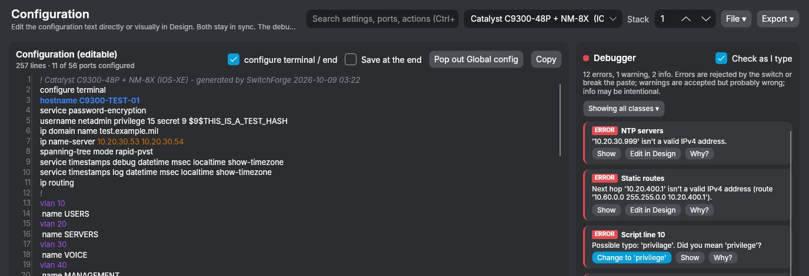
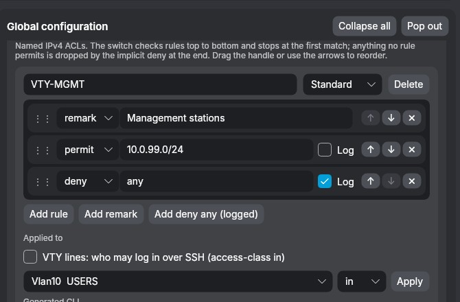
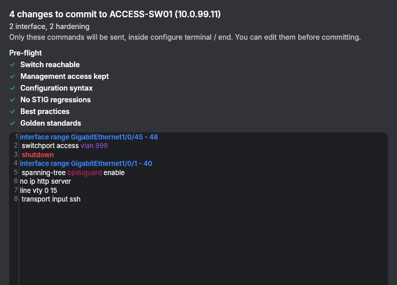
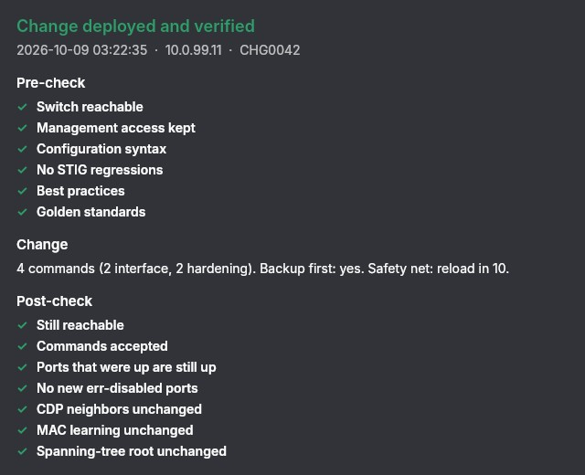
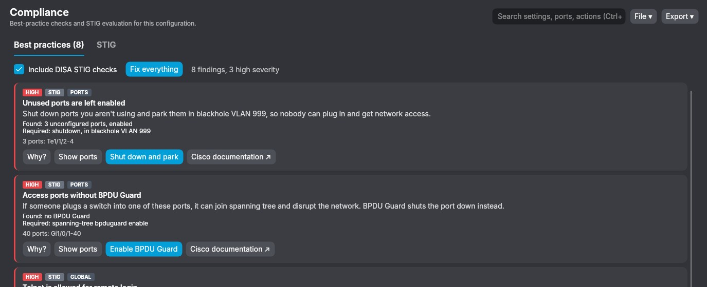
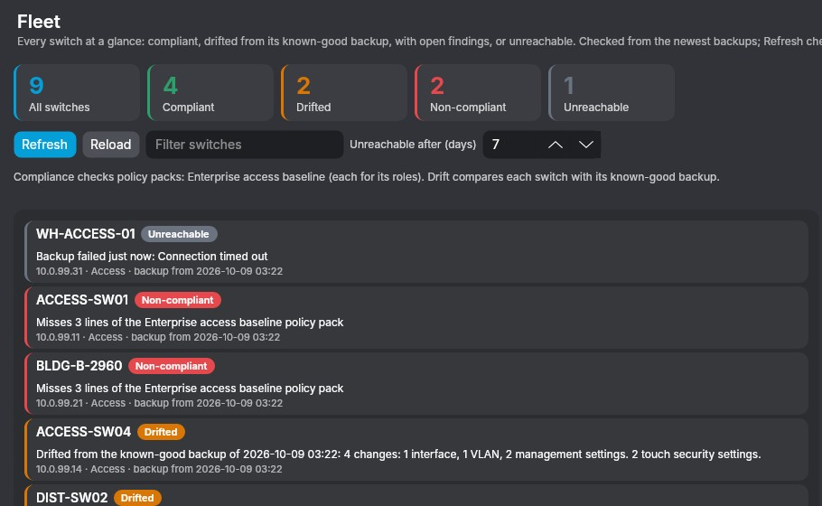
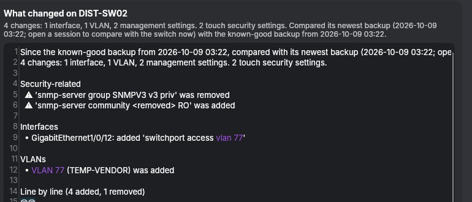
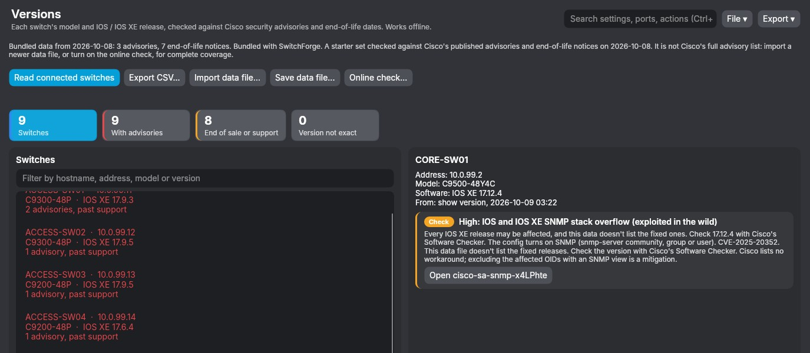

The switch is the editor
Click or drag-select ports, copy and paste port settings with a right-click, and set global options beside them. Every change updates the config, the debugger and the compliance count live.

A debugger that knows IOS
The full config stays editable, with squiggles under problem lines and a Why? explanation on every issue.
- Knows which commands belong in which mode, and offers one-click typo fixes
- Catches overlapping subnets and IOS vs NX-OS mix-ups
- Warns before a change locks you out of the switch

ACLs, scripts and import
Build named standard and extended ACLs one rule per row, reorder them by dragging, and apply them to VTY lines, SVIs or routed ports.
- Import a running-config and it maps into settings; the switch model is detected automatically
- A script library with variables, plus Bulk staging from a CSV
- STIG hardening (RADIUS with local fallback, FIPS SSH, lockout, DoD banner) as plain settings
Every change has a way back
Commits from the editor, a drift fix, Bulk or the MAC finder all take the same path: Safe Commit.

Safe Commit
Only the delta is sent, and you can edit it before it goes.
- Pre-flight: the switch is reachable, nothing cuts off management access, no debugger errors, no STIG or standard regressions
- Change: a ticket number, a backup first, then a reload-in-10 safety net or an NX-OS checkpoint
- Post-check: every command accepted, and before/after compared for down or err-disabled ports, lost CDP neighbors, MAC learning and spanning-tree root

Proof for the change ticket
Each deployment is saved as a record with secrets removed and exports as HTML for the change ticket. A passing commit becomes the switch's new known-good backup.
Compliance you can fix, and prove
Built for STIG and RMF workflows. Each finding shows what was found, what's required, the affected ports and a one-click fix.

DISA STIGs, rule by rule
Cisco IOS / IOS-XE L2S, NDM and RTR STIGs. Fix all applies every safe fix at once, with Undo. Rules for roles the device doesn't have are marked not applicable.
- Evidence in every checklist: the config lines that prove each finding, secrets masked
- Export
.cklbfor STIG Viewer 3 and eMASS, or.ckl - Device roles and policy packs with required and forbidden lines
800-53 mapping
Rules map to NIST SP 800-53 controls through DISA's CCI list, so the paperwork comes out of the same scan.
Reports and POA&M
Marked HTML or Excel reports for the assessor, and an eMASS-layout POA&M draft.
Fleet runs and STIG library
Check every switch at once, and compare STIG releases to see what changed in the benchmark.
The whole fleet, without logging in to each switch
State, history and drift, worked out from your newest backups.

Fleet board and drift
Back up hourly to weekly with an alert on drift, flagged red when security settings changed. Turn drift into a commit with one click.
- Search every backup for any config line, present or missing
- Topology from CDP and LLDP with STIG and drift overlays and a MAC/IP trace

What changed?
Changes since the last known-good backup in plain language, with security-related changes first.

IOS version inventory
Every release in the fleet, flagged against Cisco security advisories (and whether the config actually exposes the feature) and end-of-life dates.
- End-of-life data works offline
- Advisory lookup is optional, with your own Cisco API key
Runs on one Windows PC. No cloud, no account.
Your projects, backups and settings stay on your PC. No telemetry.
FIPS mode
Approved algorithms and SSH ciphers only, host key prompts, and Telnet and TFTP blocked (TFTP only as a logged exception).
Air-gap ready
Licenses are checked on the PC, so the app works on networks with no internet access at all.
SBOM and checksums
Every release ships a CycloneDX software bill of materials and SHA-256 checksums for your security review.
Profiles and roles
Encrypted profiles, with admin and read-only roles so auditors can look without changing anything.
Audit trail
A changelog of every edit, commit and export, and a saved record of each deployment with secrets removed.
Supported models
Catalyst 9300, 9200 / 9200L, 9500, 2960-X · Nexus 93180YC-FX, 9348GC-FX3PH · ISR 4331, 4431, 1111-8P, Catalyst 8200, Cisco 2911.
Get the latest test build
Windows 10 or 11, 64-bit. Nothing else to install.
Get-FileHash in PowerShell and compare with SHA256SUMS.txt..sflic file from your invitation on the first screen. Without one the app opens read-only.